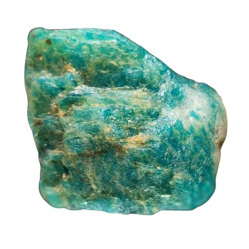
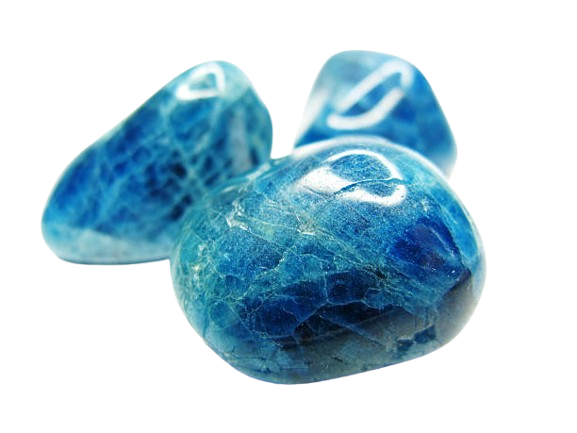
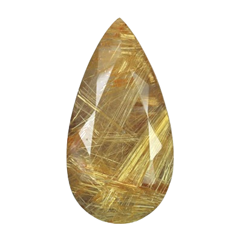
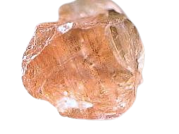
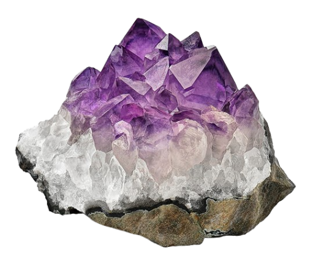
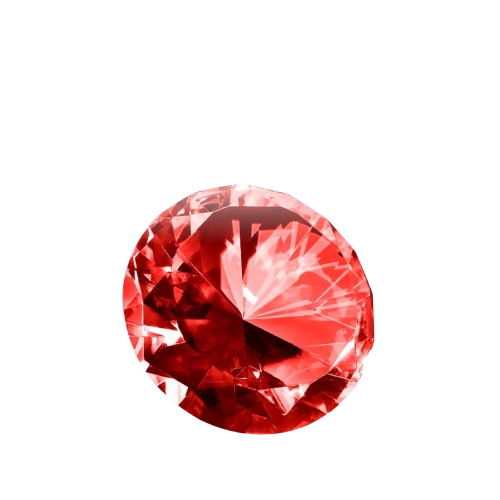

ช่วยให้ให้ความรู้สึกผ่อนคลาย
ประวัติความเป็นมา - อมาโซไนต์เป็นแร่สีเขียวฟ้าในกลุ่มเฟลด์สปาร์ มีชื่อเชื่อมโยงกับ แม่น้ำแอมะซอน แม้ไม่ได้มีแหล่งกำเนิดในบริเวณนั้นจริงมีการใช้มาตั้งแต่สมัยโบราณ โดยเฉพาะในอียิปต์ นิยมนำมาแกะสลักเป็นเครื่องประดับและเครื่องราง และพบในสุสานของ ตุตันคามุน แสดงถึงคุณค่าทางวัฒนธรรมและความเชื่อในยุคนั้น
ลักษณะหิน - คือแร่เฟลด์สปาร์ประเภทไมโครไคลน์ มีลักษณะเด่นคือสีเขียวอมฟ้า เขียวเทอร์ควอยส์ หรือสีเขียวสดใส เนื้อหินมักเป็นแบบโปร่งแสงถึงทึบแสง มักพบลายริ้วสีขาวหรือเส้นแร่แทรกแซงอยู่ภายใน ให้ความรู้สึกผ่อนคลายและคล้ายกับสีของหยก

หินแห่งการเชื่อมต่อ
ประวัติความเป็นมา - อะพาไทต์ถูกมองว่าเป็น "หินแห่งการเชื่อมต่อ" โดยทำหน้าที่หลักๆ คือสะพานเชื่อมระหว่างโลกความจริงและจิตวิญญาณ: อะพาไทต์มีความพิเศษคือเป็นแร่ชนิดเดียวกับที่พบใน กระดูกและฟันของมนุษย์นักพลังงานบำบัดจึงเชื่อว่ามันคือ "ตัวประสาน" ที่ดีที่สุดระหว่างร่างกายของเรากับพลังงานจากภายนอก
ลักษณะหิน - มีลักษณะเป็นสีฟ้าและสีน้ำเงินเขียว ซึ่งดูคล้ายกับน้ำทะเลหรือพลอยพาราอิบาทัวร์มาลีน มีตั้งแต่โปร่งใสไปยังโปร่งแสง เนื้อหินมีความเปราะและอ่อนกว่าอัญมณีส่วนใหญ่ ทำให้มักพบรอยแตกเล็กๆ ภายในหินตามธรรมชาติ

การดึงดูดทรัพย์และโชคลาภ
ประวัติความเป็นมา - เกิดจากการรวมตัวของควอตซ์และเส้นใยแร่รูไทล์ตามธรรมชาติ ซึ่งกว่าจะได้หินที่มีความสวยงามเส้นไหมชัดเจนต้องใช้เวลานาน ทำให้มีความพิเศษและความงดงามที่เป็นเอกลักษณ์ หินไหมทองถูกเชื่อว่ามีพลังงาน "พุทธคุณ" หรือพลังบวกสูงมาก โดยเกี่ยวข้องกับเรื่องต่างๆ เช่น การดึงดูดทรัพย์และโชคลาภ การสร้างพลังงานบวก
ลักษณะหิน - เป็นผลึกควอตซ์ใสที่มีแร่รูไทล์ชนิดเส้นเล็กละเอียดสีเหลืองทองฝังอยู่ภายในคล้ายเส้นไหม

หินแห่งความเป็นผู้นำ
ประวัติความเป็นมา - ชาวนอร์สเชื่อว่าซันสโตนเป็นเศษเสี้ยวแสงของดวงอาทิตย์ที่เทพเจ้ากักเก็บไว้ และเชื่อว่าถูกนำมาใช้โดยกะลาสีเรือไวกิ้งเพื่อหาทิศทางของดวงอาทิตย์ในวัน และในเชิงจิตวิญญาณ ซันสโตนถูกเชื่อมโยงกับพลังงานของรา (Ra) เทพเจ้าแห่งดวงอาทิตย์ของอียิปต์โบราณ เป็นหินแห่งความเป็นผู้นำ ความโชคดี และความรุ่งเรือง
ลักษณะหิน - เป็นอัญมณีในกลุ่มเฟลด์สปาร์ (Feldspar) ที่มีความโดดเด่นด้วยประกายระยิบระยับภายในเนื้อหิน เปรียบเสมือนแสงอาทิตย์อันอบอุ่น มีความเชื่อสืบทอดกันมาอย่างยาวนานทั้งในเรื่องของประวัติศาสตร์ พลังงาน และลักษณะทางกายภาพที่พิเศษ

พลังงานแห่งความสงบ
ประวัติความเป็นมา – มีการใช้ทำเครื่องรางและเครื่องประดับ โดยพบในสุสานของฟาโรห์ตุตันคามุนเพื่อป้องกันสิ่งชั่วร้าย ในทางอภิปรัชญา อเมทิสต์ถือเป็นหินที่มีพลังงานในการถ่ายทอดสูง เช่น พลังงานแห่งความสงบ ช่วยลดความเครียด ความวิตกกังวล และช่วยให้เข้าสู่สมาธิได้เร็วขึ้น
ลักษณะหิน - เป็นแร่ควอตซ์สีม่วงยอดนิยม มีสีตั้งแต่ม่วงอ่อนจนถึงม่วงเข้มจัด (สีพลัม) เป็นอัญมณีโปร่งใสถึงโปร่งแสง มีความแข็งระดับ 7 ตามมาตราโมห์ แข็งแรงทนทาน มักพบเป็นผลึกรูปปริซึม 6 ด้าน เป็นสัญลักษณ์ของความสงบสุข

ความรักและความผูกพัน
ประวัติความเป็นมา - garnet หรือที่คนไทยเรียกว่า โกเมน นักรบสมัยก่อนมักพกโกเมนติดตัว เพราะเชื่อว่าจะช่วยคุ้มครองให้พ้นจากอันตรายและช่วยให้บาดแผลหายเร็วขึ้น ในทางพลังงานบำบัด เชื่อว่าโกเมนช่วยกระตุ้นการไหลเวียนของเลือด เพิ่มพลังชีวิต (Vitality) และขจัดความรู้สึกหดหู่ และยังเชื่อกันว่าเป็นหินแห่ง "ความรักและความผูกพัน" ช่วยปรับสมดุลความรู้สึกและสร้างความมั่นใจ
ลักษณะหิน - มีเกือบทุกสีเป็นกลุ่มแร่ซิลิเกตที่มีโครงสร้างผลึกแบบลูกบาศก์ (Isometric) ทำให้มีความเงางามเหมือนแก้ว